Project Design Group 31 Download in PDF Format
1. Revised Entity Relationship Model
(Please click on image to see it in original size. You can close it with ESC key or by clicking somewhere else)
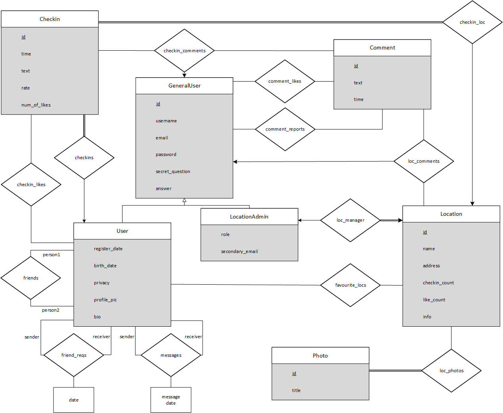{kind=link}
We have revised our E/R model based on the feedback given on Proposal of project as follows:
- Relations between several User records turned into relation on entity User and not shown as separate entities anymore. In Proposal, friends and friend_reqs relations were shown as entities. Those are now relations on User entity and the way the relation happens shown by column names written next to relationship connectors.
- A new relation called messages added as suggested to provide messaging feature. It is a relation on User entity. Extra information that needs to be stored is shown using a box connected to the relation.
- Relations between Comment, GeneralUser, Location and Checkin turned in to ternary relations as suggested. Now, Comment-GeneralUser-Location and Comment-GeneralUser-Checkin are related through ternary relations called loc_comments and checkin_comments respectively.
- Relationships related to Comment entity now are connected to GeneralUser entity instead of User entity to provide comment feature for location admins too, as suggested.
- A new relation called comment_reports added to provide reporting feature as suggested. This relation is connected to GeneralUser to make location admins be able to report like normal users.
- A new entity called Photo added to provide adding photos of locations by admins and ‘Pictures’ column is removed from Location entity as suggested. A relation between Photo and Location added.
- Foreign key in LocationAdmin is not shown on diagram anymore. New columns added to entity LocationAdmin as suggested.
- Relations between GeneralUser and User, LocationAdmin entities turned into is-a relation as suggested.
- UserSettings entity was shown as a weak entity in Proposal and the relation was suggested to be shown as total participation. Since User entity and UserSettings entity had One-to-One relation, we decided to move columns of UserSettings to User entity and removed it.
- The relations between User, Checkin and Location was suggested to be turned into a ternary relation. However after we determined the features and constraints of our application we decided to show relations separately. There are two reasons for this. First of all Checkin-User and Checking-Location both have Many-to-One relation between them. Since two arrows (Ones) in a ternary relation would cause ambiguity, it would be shown in a more clear way with separate relations. Secondly, Checkin entity has total participation in both relations and the relations are Many-to-One. We wanted to show relation this way since it shows clearly that relations can be represented as a column in Checkin entity without null values or using extra tables.
- Several cardinality constraints changed as suggested. Favourite locations relation changed to Many-to-Many from One-to-One since a user can have multiple favourite locations and a location can be favourite of many users. Relations on User entity changed to Many-to-Many since a user can be related to many in those relations. In Proposal, those were shown as either One-to-One or One-to-Many. Checkin likes relation changed to Many-to-Many from One-to-Many considering similar reasons for favourite locations.
- New entities and relations added to provide new features as suggested. A relation added to provide comment likes feature. Location rating feature added through a new column. Messaging feature between users added. Ability to report comments, for both normal users and location admins, added through a new relation.
2. Relation Schemas
2.1 GeneralUser
Relational Model
GeneralUser(id, username, email, password, secret_question, answer)
Functional Dependencies
id -> username, email, password, secret_question, answer
username -> id, email, password, secret_question, answer
email -> id, username, password, secret_question, answer
Candidate Keys
{(id), (username), (email)}
Normal Form
BCNF
Table Definition
CREATE TABLE GeneralUser (id INT NOT NULL AUTO_INCREMENT PRIMARY KEY, username VARCHAR(64) NOT NULL UNIQUE, email VARCHAR(128) NOT NULL UNIQUE, password VARCHAR(32) NOT NULL, secret_question INT(2) NOT NULL, answer VARCHAR(128) NOT NULL) ENGINE=INNODB;
2.2 User
Relational Model
User(id, username, email, password, secret_question, answer, register_date, birth_date, privacy, profile_pic, bio)
Functional Dependencies
id -> username, email, password, secret_question, answer, register_date, birth_date, privacy, profile_pic, bio
username -> id, email, password, secret_question, answer, register_date, birth_date, privacy, profile_pic, bio
email -> id, username, password, secret_question, answer, register_date, birth_date, privacy, profile_pic, bio
Candidate Keys
{(id), (username), (email)}
Normal Form
BCNF
Table Definition
CREATE TABLE User (user_id INT NOT NULL PRIMARY KEY, register_date TIMESTAMP NOT NULL, birth_date DATE NOT NULL, privacy BOOLEAN NOT NULL, profile_pic VARCHAR(128), bio VARCHAR(512), FOREIGN KEY (user_id) REFERENCES GeneralUser(id)) ENGINE=INNODB;
2.3 LocationAdmin
Relational Model
LocationAdmin(id, username, email, password, secret_question, answer, role, secondary_email)
Functional Dependencies
id -> username, email, password, secret_question, answer, role, secondary_email
username -> id, email, password, secret_question, answer, role, secondary_email
email -> id, username, password, secret_question, answer, role, secondary_email
Candidate Keys
{(id), (username), (email)}
Normal Form
BCNF
Table Definition
CREATE TABLE LocationAdmin (user_id INT NOT NULL PRIMARY KEY, role VARCHAR(64) NOT NULL, secondary_email VARCHAR(128), FOREIGN KEY (user_id) REFERENCES GeneralUser(id)) ENGINE=INNODB;
2.4 Location
Relational Model
Location(id, admin_id, name, address, checkin_count, like_count, info)
Foreign key admin_id references LocationAdmin
Functional Dependencies
id -> admin_id, name, address, checkin_count, like_count, info
admin_id -> id, name, address, checkin_count, like_count, info
Candidate Keys
{(id), (admin_id)}
Normal Form
BCNF
Table Definition
CREATE TABLE Location (id INT NOT NULL AUTO_INCREMENT PRIMARY KEY, admin_id INT NOT NULL UNIQUE, name VARCHAR(128) NOT NULL, address VARCHAR(256) NOT NULL, checkin_count INT UNSIGNED NOT NULL, like_count INT UNSIGNED NOT NULL, info VARCHAR(512) NOT NULL, FOREIGN KEY (admin_id) REFERENCES LocationAdmin(user_id)) ENGINE=INNODB;
2.5 Photo
Relational Model
Photo(id, loc_id, title)
Foreign key loc_id references Location
Functional Dependencies
id -> loc_id, title
Candidate Keys
{(id)}
Normal Form
BCNF
Table Definition
CREATE TABLE Photo (id INT NOT NULL AUTO_INCREMENT PRIMARY KEY, loc_id INT NOT NULL, title VARCHAR(256) NOT NULL, FOREIGN KEY (loc_id) REFERENCES Location(id)) ENGINE=INNODB;
2.6 Checkin
Relational Model
Checkin(id, loc_id, user_id, time, text, rate, num_of_likes)
Foreign key loc_id references Location
Foreign key user_id references User
Functional Dependencies
id -> loc_id, user_id, time, text, rate, num_of_likes
Candidate Keys
{(id)}
Normal Form
BCNF
Table Definition
CREATE TABLE Checkin (id INT NOT NULL AUTO_INCREMENT PRIMARY KEY, loc_id INT NOT NULL, user_id INT NOT NULL, time TIMESTAMP NOT NULL, text VARCHAR(256) NOT NULL, rate INT(1) NOT NULL, num_of_likes INT NOT NULL, FOREIGN KEY (loc_id) REFERENCES Location(id), FOREIGN KEY (user_id) REFERENCES User(user_id)) ENGINE=INNODB;
2.7 Comment
Relational Model
Comment(id, user_id, text, time)
Foreign key user_id references GeneralUser
Functional Dependencies
id -> user_id, text, time
Candidate Keys
{(id)}
Normal Form
BCNF
Table Definition
CREATE TABLE Comment (id INT NOT NULL AUTO_INCREMENT PRIMARY KEY, user_id INT NOT NULL, text VARCHAR(512) NOT NULL, time TIMESTAMP NOT NULL, FOREIGN KEY (user_id) REFERENCES GeneralUser(id)) ENGINE=INNODB;
2.8 friends
Relational Model
friends(person1_id, person2_id)
Foreign key person1_id and person2_id references User
Candidate Keys
{(person1_id, person2_id)}
Normal Form
BCNF
Table Definition
CREATE TABLE friends (person1_id INT NOT NULL, person2_id INT NOT NULL, PRIMARY KEY (person1_id, person2_id), FOREIGN KEY (person1_id) REFERENCES User(user_id), FOREIGN KEY (person2_id) REFERENCES User(user_id)) ENGINE=INNODB;
2.9 friend_reqs
Relational Model
friend_reqs(sender, receiver, date)
Foreign key sender and receiver references User
Functional Dependencies
sender, receiver -> date
Candidate Keys
{(sender, receiver)}
Normal Form
BCNF
Table Definition
CREATE TABLE friend_reqs (sender INT NOT NULL, receiver INT NOT NULL, date TIMESTAMP NOT NULL, PRIMARY KEY (sender, receiver), FOREIGN KEY (sender) REFERENCES User(user_id), FOREIGN KEY (receiver) REFERENCES User(user_id)) ENGINE=INNODB;
2.10 messages
Relational Model
messages(sender, receiver, message, date)
Foreign key sender and receiver references User
Functional Dependencies
sender, receiver -> message, date
Candidate Keys
{(sender, receiver)}
Normal Form
BCNF
Table Definition
CREATE TABLE messages (sender INT NOT NULL, receiver INT NOT NULL, message VARCHAR(512) NOT NULL, date TIMESTAMP NOT NULL, PRIMARY KEY (sender, receiver), FOREIGN KEY (sender) REFERENCES User(user_id), FOREIGN KEY (receiver) REFERENCES User(user_id)) ENGINE=INNODB;
2.11 checkin_likes
Relational Model
checkin_likes(checkin_id, user_id)
Foreign key checkin_id references Checkin
Foreign key user_id references User
Candidate Keys
{(checkin_id, user_id)}
Normal Form
BCNF
Table Definition
CREATE TABLE checkin_likes (checkin_id INT NOT NULL, user_id INT NOT NULL, PRIMARY KEY (checkin_id, user_id), FOREIGN KEY (checkin_id) REFERENCES Checkin(id), FOREIGN KEY (user_id) REFERENCES User(user_id)) ENGINE=INNODB;
2.12 checkin_comments
Relational Model
checkin_comments(checkin_id, comment_id)
Foreign key checkin_id references Checkin
Foreign key comment_id references Comment
Candidate Keys
{(checkin_id, comment_id)}
Normal Form
BCNF
Table Definition
CREATE TABLE checkin_comments (checkin_id INT NOT NULL, comment_id INT NOT NULL, PRIMARY KEY (checkin_id, comment_id), FOREIGN KEY (checkin_id) REFERENCES Checkin(id), FOREIGN KEY (comment_id) REFERENCES Comment(id)) ENGINE=INNODB;
2.13 loc_comments
Relational Model
loc_comments(loc_id, comment_id)
Foreign key loc_id references Location
Foreign key comment_id references Comment
Candidate Keys
{(loc_id, comment_id)}
Normal Form
BCNF
Table Definition
CREATE TABLE loc_comments (loc_id INT NOT NULL, comment_id INT NOT NULL, PRIMARY KEY (loc_id, comment_id), FOREIGN KEY (loc_id) REFERENCES Location(id), FOREIGN KEY (comment_id) REFERENCES Comment(id)) ENGINE=INNODB;
2.14 comment_reports
Relational Model
comment_reports(user_id, comment_id)
Foreign key user_id references GeneralUser
Foreign key comment_id references Comment
Candidate Keys
{(user_id, comment_id)}
Normal Form
BCNF
Table Definition
CREATE TABLE comment_reports (user_id INT NOT NULL, comment_id INT NOT NULL, PRIMARY KEY (user_id, comment_id), FOREIGN KEY (user_id) REFERENCES GeneralUser(id), FOREIGN KEY (comment_id) REFERENCES Comment(id)) ENGINE=INNODB;
2.15 favourite_locs
Relational Model
favourite_locs(user_id, loc_id)
Foreign key user_id references User
Foreign key loc_id references Location
Candidate Keys
{(user_id, loc_id)}
Normal Form
BCNF
Table Definition
CREATE TABLE favourite_locs (user_id INT NOT NULL, loc_id INT NOT NULL, PRIMARY KEY (user_id, loc_id), FOREIGN KEY (user_id) REFERENCES User(user_id), FOREIGN KEY (loc_id) REFERENCES Location(id)) ENGINE=INNODB;
2.16 comment_likes
Relational Model
comment_likes(user_id, comment_id)
Foreign key user_id references GeneralUser
Foreign key comment_id references Comment
Candidate Keys
{(user_id, comment_id)}
Normal Form
BCNF
Table Definition
CREATE TABLE comment_likes (user_id INT NOT NULL, comment_id INT NOT NULL, PRIMARY KEY (user_id, comment_id), FOREIGN KEY (user_id) REFERENCES GeneralUser(id), FOREIGN KEY (comment_id) REFERENCES Comment(id)) ENGINE=INNODB;
3. Functional Dependencies and Normalization of Tables
With the section 2 we used Boyce-Codd normal form for normalization of tables when we create out tables.
4. Functional Components
4.1 Use Cases/Scenarios
We have 3 different users in the project. Users, location admins and new users. Each will have different functions, which can be seen in different scenarios down below. Since new users cannot been able to get in our system without signing up, they are not in our ER model.
4.1.1 Users
These types of general users are the ones who use our social media for the purposes of entertaining or getting information about the places. They can search for places and make check-ins in them, see the ratings, make comments, give ratings about a place. They can add friends, accept, decline a friends request or delete a friend, look up for their friends’ check-in’s and make comments about that check-ins. Friends can send messages to themselves. Users can like comments and check-ins. They can also change their passwords, privacy level and profile picture in the settings menu.
View a place: Users can search for a place by using the search bar. Or click on a place’s name on the news feed page.
Make/Delete a check-in: Users can check-in in a place by visiting a place’s page and click on the check-in button in the page. Users can also delete a check-in after they post it.
See the ratings: Users can see the ratings of a place on the place’s page.
Make comments: Users can make comments about a place after they check-in in them, by clicking on the “Make Comment” button on place’s page.
Give ratings: Users can give ratings to a place after they check-in in the place, by clicking on the “Give Rating!” button on the place’s page.
View a friend: Users can view a friend by moving to “Friends” page, and search for a new friend in this page.
Add friend: Users can add a friend by visiting a user’s personal page, via the help of search bar in the “Friends” page.
Accept or Decline friend request: Users can accept or decline a friends request by visiting the Friends Request page.
Delete friend: Users can delete a friend by visiting a “Friends” page, by clicking the “Delete Friend” button.
Look up for friends’ check-ins: Users can look up for their friends’ check-ins in the news feed page, which is the default page for a user when they log in in our system. Or by visiting their personal page via the help of search bar in the “Friends” page.
Make comment to a friend’s check-in: Users can make a comment to their friends’ check-ins by clicking on the “Make Comment” button, after they look up for friends’ check-ins.
Send Message: Users can send a message to a friend by using the “Messages” menu.
Like comment/Check-in: Users can like a comment or a check-in by clicking the “Like” button on the page, after they reach to a comment or a check-in, in their news feed page or visiting a friend’s profile.
Change Password: Users can change their passwords in the “Settings” menu by clicking the “Change Password” button.
Change Privacy Level: Users can adjust their privacy settings in the “Settings” menu. They can choose to publicly open their profiles or making it private so that only his/her friends can see the profile of the user.
Add/Change Profile Picture: Users can add or change profile picture in the “Settings” menu by clicking “Change Profile Pic” button.
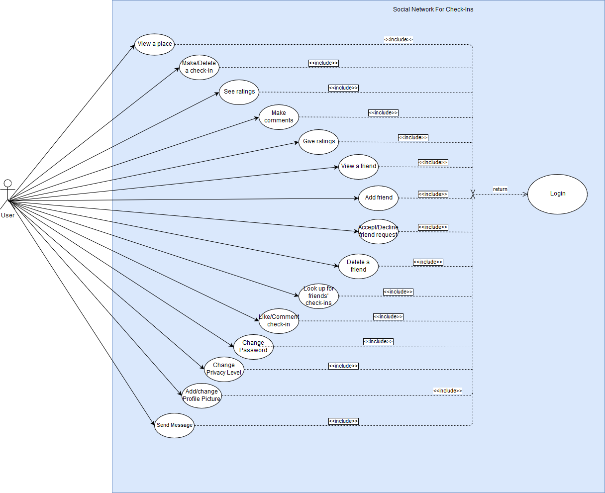{kind=link}
4.1.2 Location Admins
Locations admins are responsible for adding their places into our system. They can add their places by giving the name of their places and addresses. They can upload photos for their places, see the check-in counts and the ratings which the users give. They will have also a second email address, in case of forgetting their passwords.
Add place: Location Admins can add their register their places by clicking the “Register a Place” button in their main menu.
Give a name: Location Admins can add the name of their places to our system by filling the “Name” section when they are in the “Register a Place” menu.
Add Address: Location Admins can add the address of their place by filling the “Address” section when they are in the “Register a Place” menu.
Upload Pictures: Location admins can upload the pictures of their places by clicking the “Upload a Picture” button in their main menu.
See check-in count: Check-in count will be displayed for their places, in their main menu.
See ratings: Ratings will be displayed for their places, in their main menu.
Get a new password: Location Admins can obtain a new password, by clicking the “Forgot Password” button. After they click, a new password will be send to the Location Admin’s secondary email address.
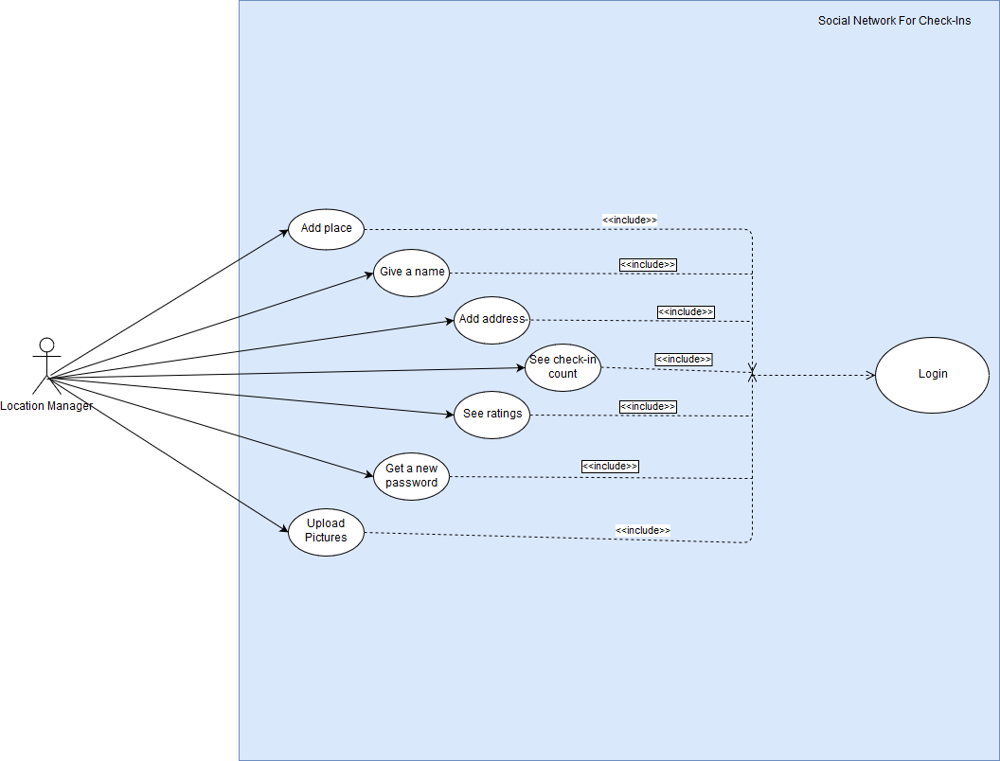{kind=link}
4.1.2 New Users
New Users will be the people who want to sign up to our system. After they access to our system’s web page, they can sign up as a User or Location Admin. After the signing up process, they will no longer be a New User. If New User signs up as a Location Admin, he/she has to enter a secondary email for changing or retrieving password for their accounts.
Sign up: New Users can Sign up by clicking the “Create your Account” or “Create your Manager Account” buttons in the website. They can sign up as a new User and Location Admin. After they click, a new page will load and they will enter their name, surname, user name, email, password and a secret question. After they complete the sign up procedure, system will give the new user a unique ID and store the registration date to the database.
Since new users are not a part of the system, they will not be able to access to our system. So that, they will not have any functions other than sign up.
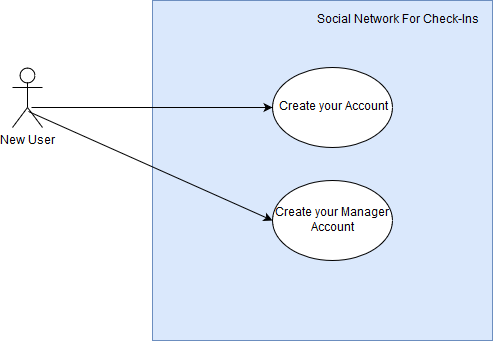{kind=link}
4.2 Algorithms
4.2.1 Search Related Algorithms
Users can search through our system with 2 different types. They can search for a location by using the search bar on the upside of the page. Search bar will only look to locations when they use search bar. However, they can also search for a person by using the search bar on the “Friends” page. This particular search bar will only look up for people in our system.
4.2.2 Logical Requirements
Our application will have many logical requirements. For example, a user cannot make an empty comment, sign up with an empty name, username or password. We will look up for that kind of requirements in our system for preventing future errors.
4.2.3 Data Structure
In our system, we will use two types of variables, which are numeric and text types.
Numeric types will be used for storing numeric values like ID’s. We will use INT as our numeric type.
Text types will be used for storing variables which like name, username etc.
5. User Interface Design and Corresponding SQL Statements
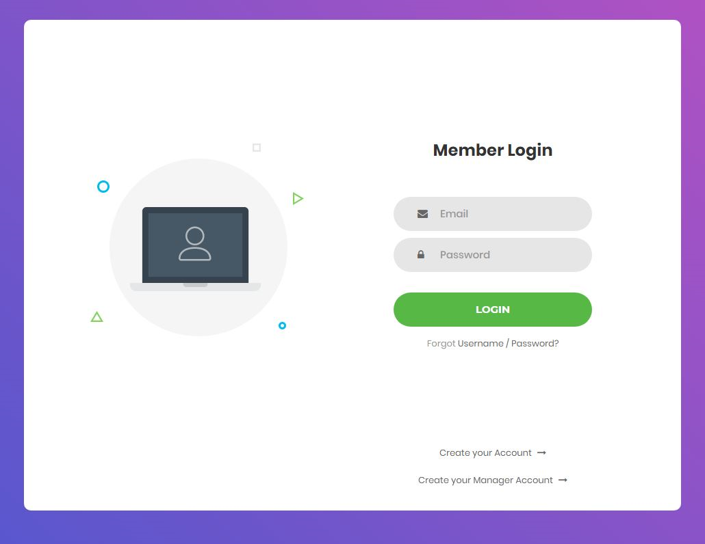{kind=link}
5.1 Login
Inputs: @email, @password
Process: When user enter the system this page shows up. Here, user can login the system. If user forgot password, he/she can go to change password page. Also user can create account or manager account. Both manager and user can enter system from this page.
SQL Statements:
Enter the system:
Select * From GeneralUser Where username = @username and password = @password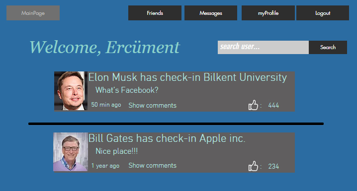
{kind=link}
5.2 Newsfeed Page
Inputs: @search, @user_id
Process: After user login system this page shows up. Newsfeed appears in this page. Newsfeed includes recent check-ins of his/her friends. Also user can reach his friends, messages, profile. Also user can logout from system. In this page user can search location to make check-ins or learn about locations.
SQL Statements:
Newsfeed:
Select user.username, user.profile_pic, checkin.location_name, checkin.text, checkin.time, checkin.num_of_like From user, friends, checkin Where @user_id = friends.person1_id and user.id = friends.person2_id and comment.user_id = friends.person2_id Order by time descWelcome Message:
Select username From user Where id = @user_id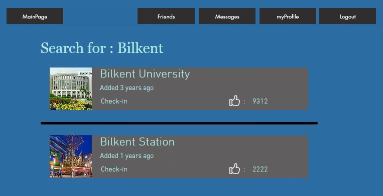
{kind=link}
5.3 Location Search
Inputs: @search, @user_id
Process: After user search a place, this page shows up. System shows all locations which includes search keyword. User can choose a location and go to that locations page.
SQL Statements:
Search location:
Select * From location Where name like ‘%@search_name%’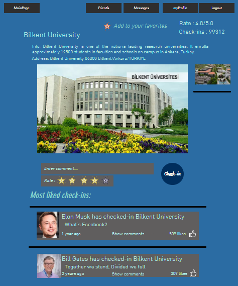
{kind=link}
5.4 Location Page
Inputs: @user_id, @loc_id, @time, @text, @selected_checkin, @selected_user
Process: When user search a location and enters that location this page shows up. In this page user can see information about location also he/she can enters comment and make check-in this location. User will be able to see recent check-ins for this location. Also user can like check-ins in this page.
SQL Statements:
Information about location:
Select * From location , photo Where location.id = @loc_id and photo.loc_id = idEnter check-in:
Insert into checkin values(@loc_id, @text, @rate)Most liked check-ins:
Select user.username, user.profile_pic, checkin.location_name, checkin.text, time, checkin.num_of_like from location, checkin, user where location.id = @loc_id and location.id = checkin.loc_id and user.id = checkin.user_id and checkin_likes.checkin_id = checkin.id order by num_of_like descLike check-ins(if no matches in checkin_likes by this user id to avoid double like):
Insert into checkin_likes values(@selected_checkin, @selected_user)Add location to your favorites:
Insert into favorite_locs Values(@user_id, @loc_id)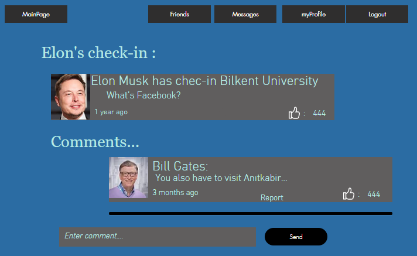
{kind=link}
5.5 Check-in Page
Inputs: @user_id, @checkin_id, @text, @selected_comment_id, @selected_user_id
Process: When user enters someone’s check-in via show comment. He/she can see all comments which sended that check-in. Also he/she can enters new comment. User can both like check-in and comments in this page.
SQL Statements:
Check-in:
Select user.username, user.profile_pic, checkin.location_name, checkin.text, checkin.time, checkin.num_of_like from checkin, user where checkin.id = @checkin_id and checkin.user_id = user.idComments of check-ins:
Select user.username, user.profile_pic, checkin.location_name, checkin.text, checkin.time, checkin.num_of_like From checkin_comments, comment, user Where checkin_comment.checkin_id = @checkin_id and checkin_comment.comment_id = comment.id and comment.user_id = user.idEnter comment:
insert into comment values(@user_id, @text, @time)Comment like:
insert into comment_likes values(@user_id, @ selected_comment_id)Report comment:
Insert into comment_report values(@selected_comment_id, @selected_user_id)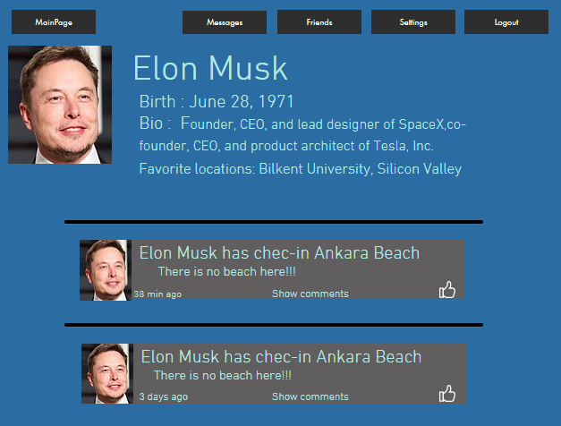
{kind=link}
5.6 Profile Page
Inputs: @user_id
Process: When user click on myProfile button he/she can see how others see their profiles. Also they can see all check-ins which already posted.
SQL Statements:
Check-in:
select username, birth_date, bio from user where user.id = @user_idAll check-ins:
Select user.username, user.profile_pic, checkin.location_name, checkin.text, checkin.time, checkin.num_of_like From checkin, user Where checkin.user_id = @user_id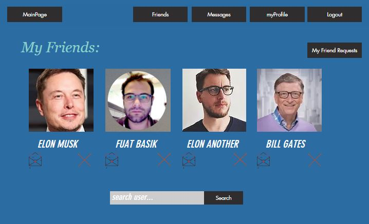
{kind=link}
5.7 My Friends Page
Inputs: @user_id, @selected_rem_friend, @search_friend
Process: When user click on friends. He/she can see their friends and message them or remove them. Also they can search for new friends.
SQL Statements:
Show friends:
Select user.profil_pic, user.username from user, friend where friends.person1_id= @user_id and friends.person2_id = user.idRemove friends:
Delete from friends Where friends.person2 = @selected_rem_friend or (friends.person1 = @selected_rem_friend and friends.person2 = @user_id)

5.8 User Search
Inputs: @search_friend, @user_id, @selected_user_id
Process: After user search friend this page show user all user which include the key in their username. Also they can add those users.
SQL Statements:
Search friend:
Select profil_pic, username, reg_date, location.name From user, favorite_loc, location Where username like ‘%@search_friend%’ and favorite_loc.user_id = @user_id and favorite_loc.loc_id = location.idFriend Request:
Insert into friend_req Values (@user_id, @selected_user_id,@time)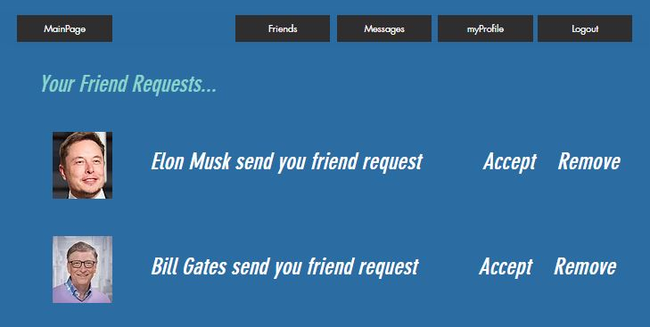
{kind=link}
5.9 Friend Requests
Inputs: @user_id, @selected_id
Process: After user click on my friend requests, he/she can see requests and accept the request or remove request.
SQL Statements:
Accept user request:
Insert into friends Values(@user_id, @selected_id) Insert into friends Values(@selected_id, @user_id)Remove user request:
Remove from friend_reqs Where receiver = @user_id and sender = @selected_idShow Requests:
Select profile_pic, username From friend_req, user Where friend_req.receiver = @user_id and friend_req.sender = user.sender
{kind=link}
5.10 Messages
Inputs: @user_id, @selected_id, @message, @time
Process: After users click on messages. They can see all of their friends’ pictures. If they click picture of friend, they can see messages with that friend and send them new messages.
SQL Statements:
Showing all friends:
select profil_pic, username from user, friend where friends.person1_id= @user_id and friends.person2_id = user.idShowing messages of selected friend:
Select message, date From messages Where reviever = @user_id and sender = @selected_idSending message:
Insert into messages Values (@user_id, @selected_id, @message, @time)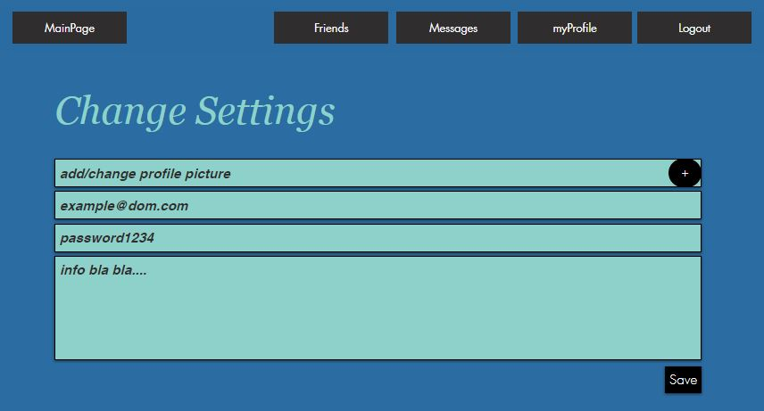
{kind=link}
5.11 Change Settings
Inputs: @user_id, @profil_pic, @email, @password, @bio
Process: User can change his profil picture, e-mail, password and bio from this page.
SQL Statements:
Updating user settings:
Update user Set profil_pic = @profil_pic, email = @email, password = @password, bio = @bio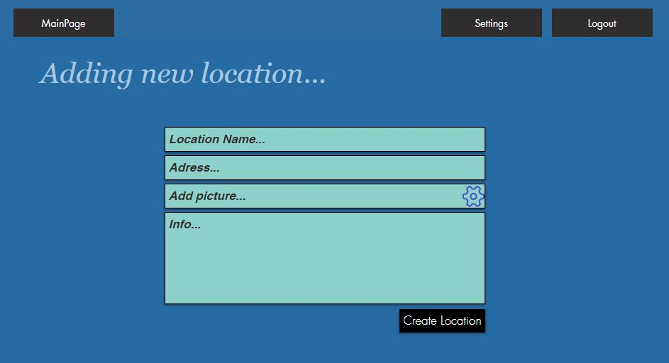
{kind=link}
5.12 Add New Location
Inputs: @name, @address, @photo, @info
Process: Manager can add new location from this page.
SQL Statements:
Creating new location:
Insert into location Values(@name, @address, @photo, @info)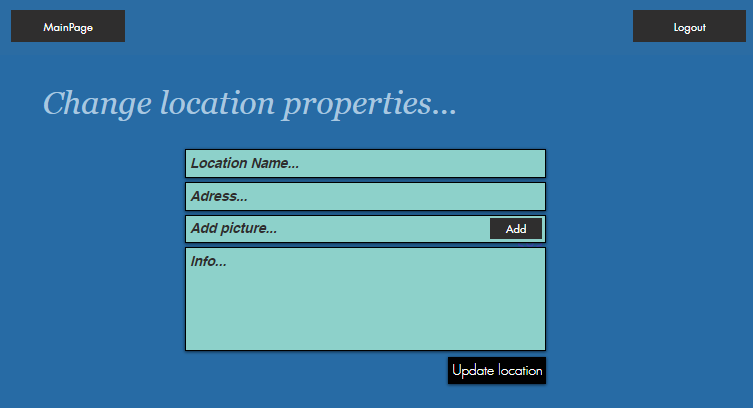
{kind=link}
5.13 Change Location Settings
Inputs: @location_id, @title, @name, @ address, @photo, @info
Process: Manager can update new location from this page.
SQL Statements:
Updating location settings:
Update location set name = @name, address= @ address, info = @info where location.id = @location_idAdding new photos:
Insert into photo Values (@location_id, @title)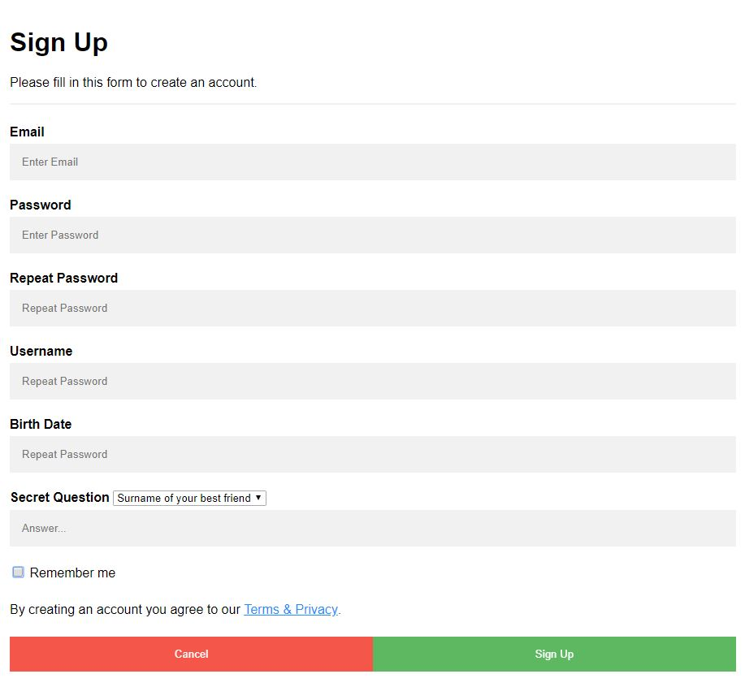
{kind=link}
5.14 Sign Up For User
Inputs: @email, @password, @username, @birth_date, @answer
Process: User will sign up in this page
SQL Statements:
New user sign-up:
Insert into user values(@email, @password, @username, @birth_date, @answer) Where @password = @reppass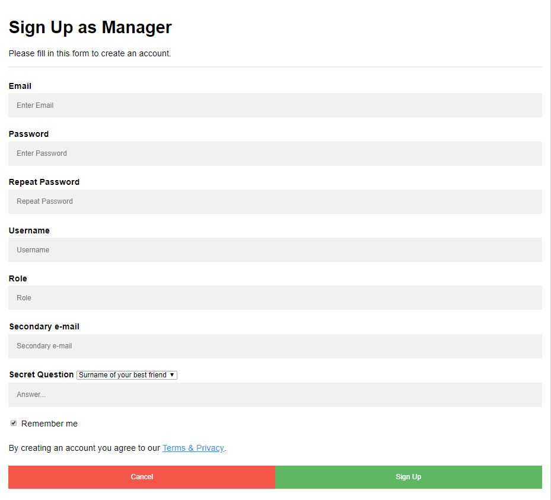
{kind=link}
5.15 Sign Up For Managers
Inputs: @email, @password, @username, @role, @secondary_email, @answer
Process: Manager will sign up in this page
SQL Statements:
New manager user sign-up:
Insert into LocationAdmin Values(@email, @password, @username, @role, @secondary_email, @answer) Where @password = @reppass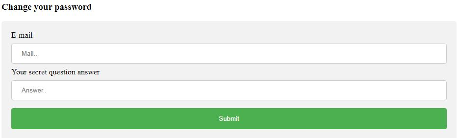
{kind=link}
5.16 Change Password Validation
Inputs: @email, @answer
Process: After click on forgot password button, this page will show up. User should enter mail and secret question answer so that system will validate that user.
SQL Statements:
Validation of mail and answer:
Select id From GeneralUser Where email = @email and answer = @answer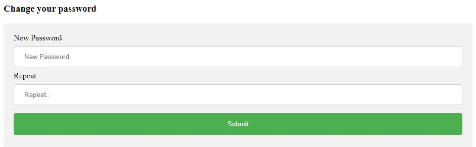
{kind=link}
5.17 Change Password
Inputs: @id, @password, @reppass
Process: After mail-question validation this page will show up and user decide his/her new password.
SQL Statements:
Decide new password:
Update GeneralUser Set password = @password Where id = @id Where password = repassword Where @password = @reppass
6. Advanced Database Components
6.1 View
We will have two different views in the project, one for User and one for Location Manager.
6.1.1 User View
Users will mainly see their personal “News Feed” page when they sign in to the system. News feed will be produced by User’s friends and system will order the check-ins of User’s friends according to time. Check-ins which posted lastly will be seen first and User can see other check-in chronically. So, when User logs in to the system, we will use this view to list the check-ins.
Create view user_friends as Select person2 from user, friends Where user.id = friends.person1 Create view friends_checkins as Select * from checkin Where checkin.user_id in user_friends
Users can also see a location’s page, check-ins made in the location, and the rating. We will use this view to list check-ins.
Create view checkins_inloc as Select * from checkin Where loc_id = @loc_id Order by time desc
6.1.2 Location Manager View
Location Manager will mainly see his/her location’s page, check-ins made in the place and the rating of the place. Check-ins made in the place will chronically order and Location Manager will see the lastly posted check-in on the top of the page. We will use this view to list the check-ins.
Create view location_ret as Select * from location Where admin_id = @admin_id
6.2 Stored Procedures
We planned to use stored procedures when creating a check-in, location, and user. Whenever a check-in created by the user, we need to create a check-in tuple for every check-ins in our system.
A procedure that is similar for check-ins will be applied whenever a User, Location Manager or a location created, and we need to create as many tuples as them.
We will need to store check-ins for displaying them in User’s and Location Manager’s view, store friends for displaying check-ins in the “News Feed” page for User’s view, and store locations for displaying them in User’s and Location Manager’s View.
6.3 Reports
When a User wants to see how many likes his/her check-ins have, User will see them as a report and can track them according to time and User.
6.4 Triggers
- When a check-in is deleted from system, all comment which connected to that check-in will also be deleted.
- When a comment is liked, like count will be increased.
- When location manager is created, location table will be updated.
- When a check-in added to system, check-in count will be increased.
- When a location deleted, check-ins for that location also will be deleted.
- When a check-in deleted, number of check-ins will be decreased.
- When a friend deleted, messages with those users also will be deleted.
6.5 Constraints
- If someone wants to use this system, he/she should login.
- If user wants to see comments of check-in, user should enter the corresponding check-in page.
- If someone wants to check-in a location, location should exist in system.
- User should search for a person if he/she wants add him/her as a friend.
- User should search for a location if he/she wants to check-in.
- User cannot see non friends check-ins if the privacy is close.
- There cannot be two same username.
7. Implementation Plan
We are going to use MySQL server in our project as database management system. For web site logic and UI we will code in php, html also js.